A single passage
Begin with a few lines.
Leave room to reflect.
Independent Dhamma publishing
Books to read slowly.
Teachings to return to.

Featured publication
A collection of teachings for reading,
reflection, and practice.
Begin with a few lines.
Leave room to reflect.
Stay with a teaching
over several visits.
A place for books
and Dhamma teachings.
02 / A passage to sit with
Jhāna and wisdomNo jhāna without wisdom,
no wisdom without jhāna.
One who has both
stands close to nibbāna.
A little space before the next passage.
03 / About the book
Ayya Khema’s teachings brought together for reading and reflection.